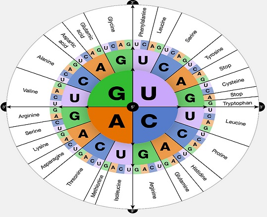

Advanced Topics in Information Science
Course outline, lecture notes, and readings for INSC 702.

Course outline
Course materials
1. Scanning the field of Information Science
Information science, information theory, and bibliometrics.
2. Information Retrieval
Retrieval models, text classification, indexing, and searching.
3. Language and Information
Natural language processing, applications, and tools.
4. Data Science
Artificial intelligence, machine learning, and deep learning.
5. Social Impacts of Technology
E-governance, digital innovation, and social and urban informatics.
Scanning the field of Information Science
- A Concept Map of Information Systems Research Approaches
- A Note About Information Science Research
- Day 1: Bibliometrics, Scientometrics, and Citation Analysis
- Day 1: Information Theory
- Day 1: Scanning Information Science
- Emerging Trends and New Developments in Information Science
- Information Sciences 1968–2016: A Retrospective Analysis
- Information Science: Information Theory
- Introduction to Webometrics
- Semiotics and Information Science
- The Invisible Substrate of Information Science
- The Challenge of Challenges and Information Science
- Classification Schemes of Information Science
- Information Science (Tefko)
- Knowledge Map of Information Science
- The Landscape of Information Science
Data Science
- Day 4: Data Science, AI, ML, and DL
- Factors Affecting Intention to Use AI-Based Recruitment
- Frontiers in Massive Data Analysis
- Getting Started with Jupyter Notebooks
- Leveraging Big Data for Traffic Incident Management
- Robust Machine Learning: Adversarial Attacks and Anomalies
- The Frontiers of Machine Learning
- Data Science Skills
Social Impacts of Technology
Reading selections